EO Time Series Viewer
A QGIS plugin to explore Earth Observation
Time Series Data
Benjamin Jakimow, Sebastian van der Linden, Fabian Thiel & Patrick Hostert
Geography Department, Humboldt-Universität zu Berlin, Germany
Background
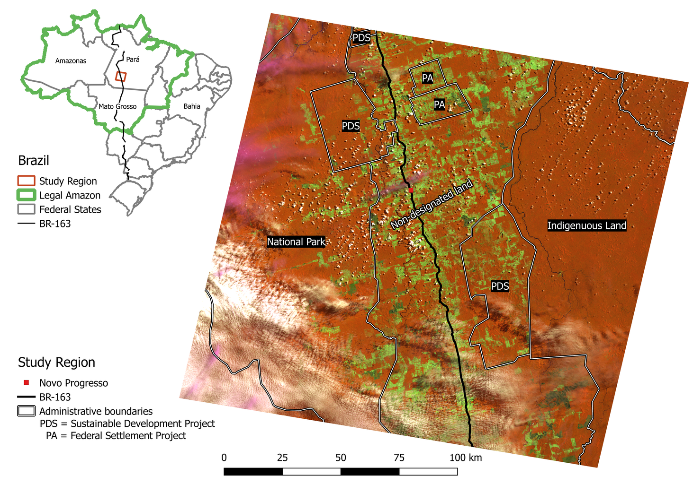
Jakimow, B., Griffiths, P., van der Linden, S. and Hostert, P. (2018):
"Mapping pasture management in the Brazilian Amazon from dense Landsat time series."
Remote Sensing of Environment 205: 453-468.
Analysis of EO Time Series Data
80 Landsat (7+8), 43 RapidEye, 10 Pléiades, 5 SPOT
GPS positions, official maps on deforestation and land cover, administrative units, ...
Camera pictures with locations, personal notes
| Landsat 7 2014-07-02 |
Landsat 8 2014-07-10 |
Landsat 7 2014-07-18 |
Landsat 8 2014-07-26 |
| 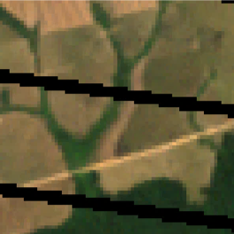 | 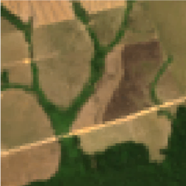 | 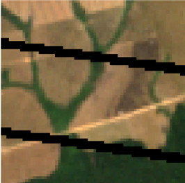 | 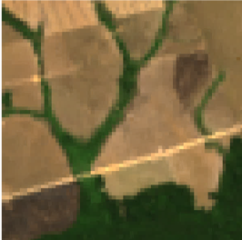 |
| 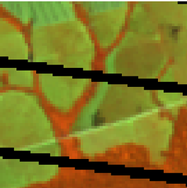 | 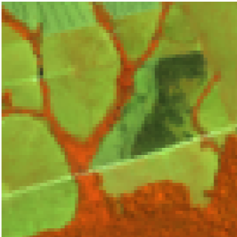 | 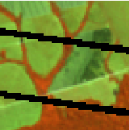 | 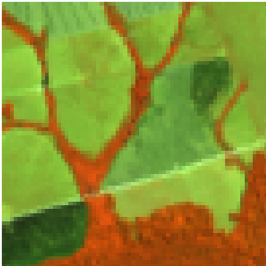 |
Problems
- visualize multiple maps side-by-side
- adjust & synchronize raster rendering
- visualize & compare spectral- and temporal changes
software to visualize EOTS data
| GUI | TS | MM | SP | TP | VRT | Notes | |
| TimeSync | ++ | ++ | + | ++ | - | registration required,
Cohen et al. (2010) |
|
| TSTools | ++ | - | ++ | ++ | open source, QGIS Plugin | ||
| ENVI | ++ | + | ++ | ++ | - | commercial | |
| SNAP | + | + | ++ | + | - | open source | |
| GEE | ++ | + | + | + | online only, Gorelick et al. (2017) | ||
| ArcGIS | - | + | + | - | + | commercial | |
| QGIS | - | + | + | - | + | open source |
Features:
TS = time series is a known concept,
MM = multiple maps side-by-side,
SP = spectral profiles, TP = temporal profiles,
VRT = reads GDAL virtual rasters
Support: basic (+), good (++), none (-)
Goals
- integrated & interactive visualization
multiple maps + spectral and temporal profiles -
easy adjustments of render settings
less mouse-clicking -
support multiple sensors and formats
different resolutions, spatial extents, read data "as-is", VRTs
-
offline usability
field work in remote areas
EO Time Series Viewer
plugins.qgis.org/plugins/timeseriesviewerplugin/ (currently broken ☹ ) 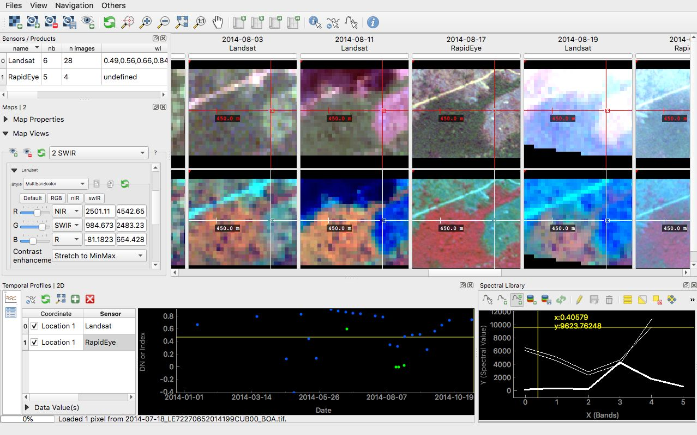Add images
 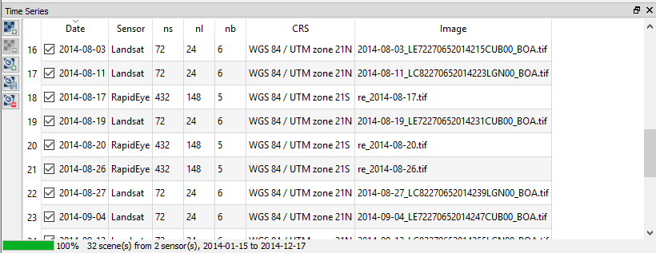
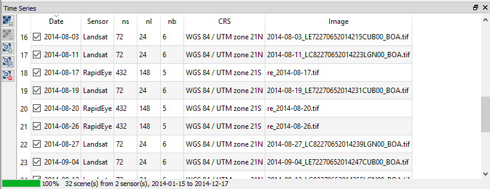
- automatic time-stamp extraction
ISO 8601, searched in raster metadata, basename and full path - supports varying projections, grids and extents
thx toQgsRasterLayerandQgsMapCanvas
Map Visualization
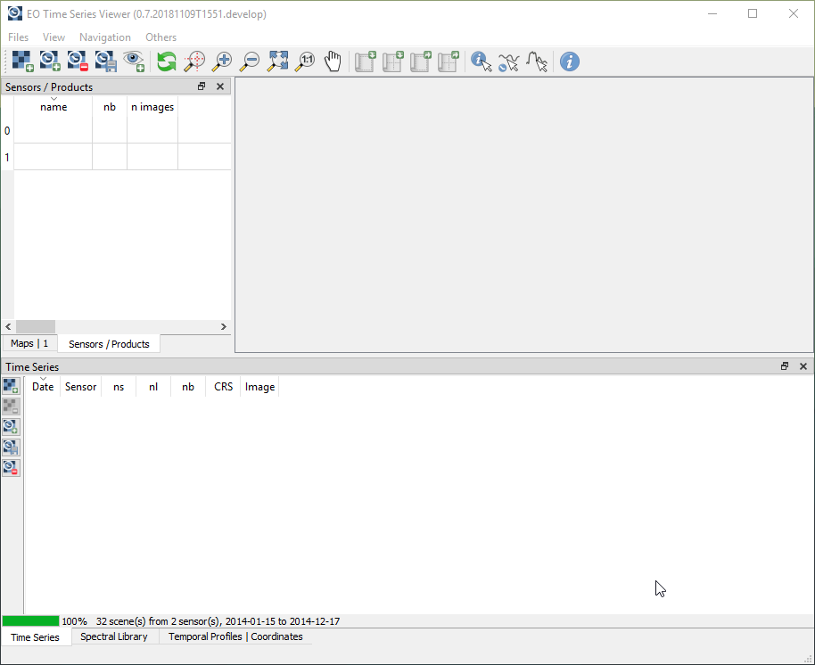 Map Views
Map Views
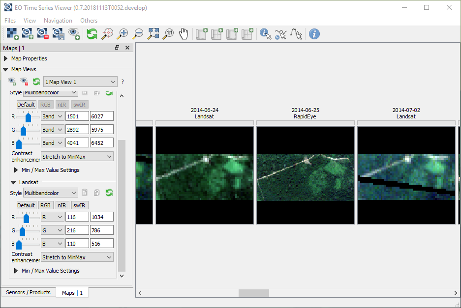
Temporal Profiles
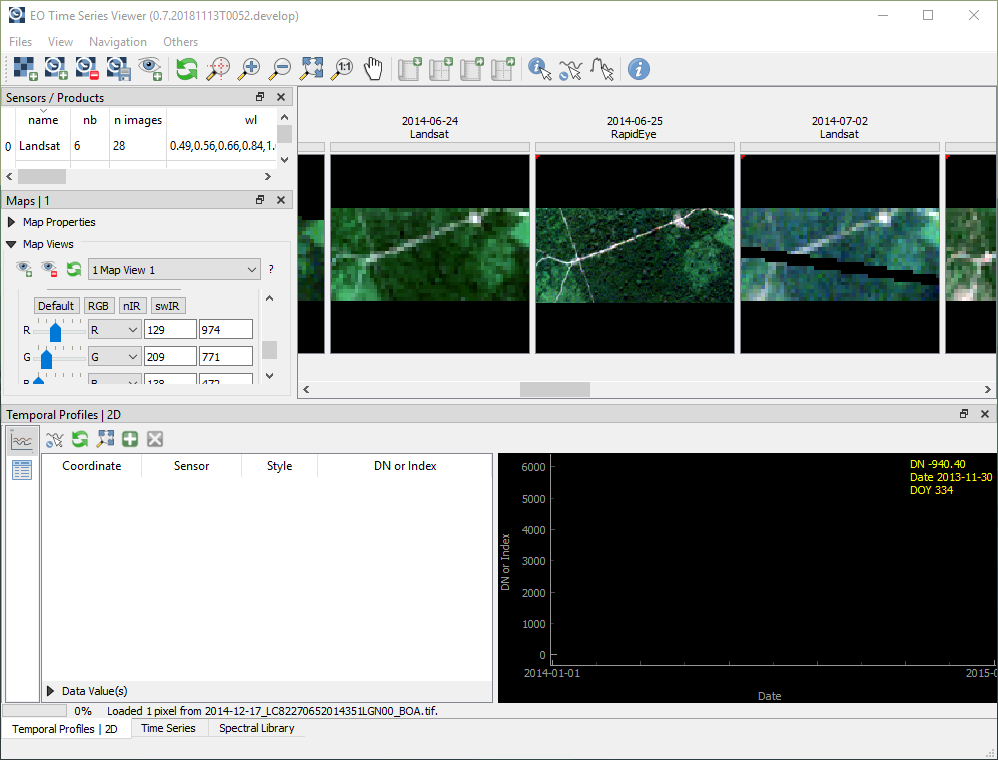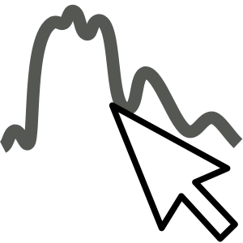 Spectral profiles
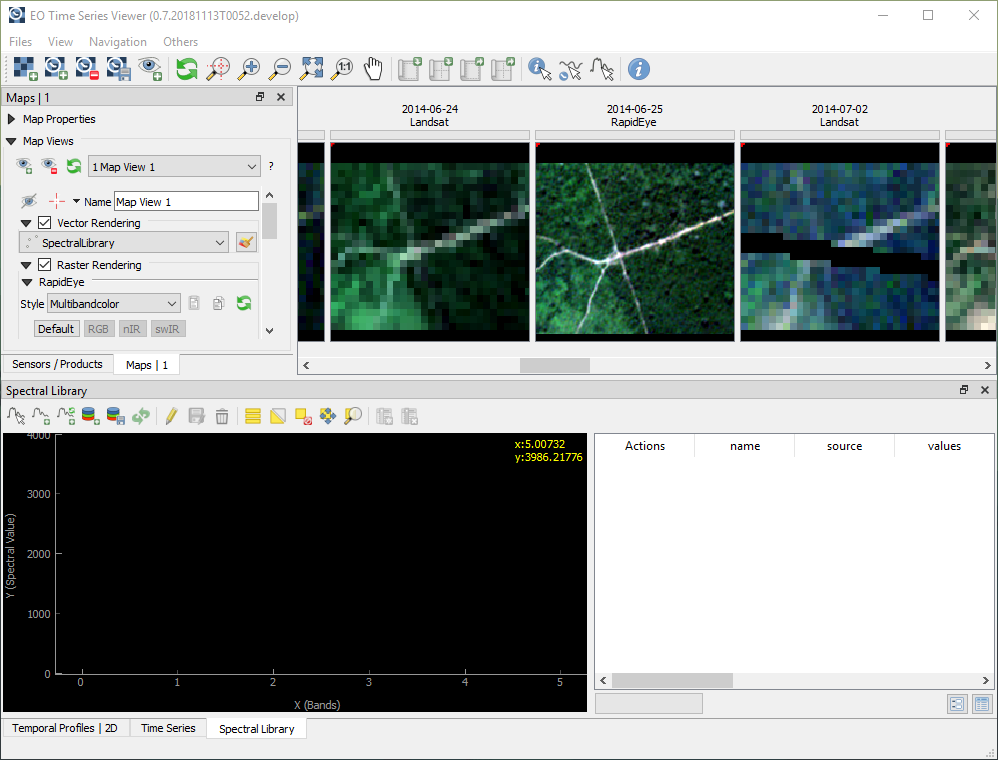 Label reference data
Label reference data
- create / edit POIs as vector geometries + attributes
- copy & paste time stamps, DOY, sensor names, ...
Next Version (0.8)
- several bug-fixes
- faster spatial, temporal & spectral visualization
- improved spectral library & labeling tools
Conclusion
The QGIS API is really awesome!
- visualizes raster time series data "as-is"
- provides an interactive view on spatial, spectral and temporal raster data dimensions
- supports labeling of reference data
Wishlist
qgis.PyQt.QtCharts
because it's already Qt, https://doc.qt.io/qt-5/qtcharts-overview.htmlQgsMapLayerComboBoxfor separatedQgsMapLayerStore
select map layers hidden to QGIS DesktopQgsRasterBandComboBoxwith sliders
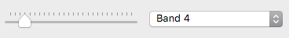 for users of hyperspectral raster dataenhancedQgsApplication([])for testing- something like
QgsRasterLayer.metadata(...)->dict
to access all thegdal.Dataset.GetMetadata(...)
Thanks for your attention
benjamin.jakimow@geo.hu-berlin.de
bitbucket.org/jakimowb/eo-time-series-viewer
The EO Time Series Viewer is developed at Humboldt-Universität zu Berlin. Born in the SenseCarbon project, it was funded by the German Aerospace Centre (DLR) and granted by the Federal Ministry of Education and Research (BMBF, grant no. 50EE1254). Since 2017 it is developed under contract by the German Research Centre for Geosciences (GFZ) as part of the EnMAP Core Science Team activities, funded by DLR and granted by the Federal Ministry of Economic Affairs and Energy (BMWi, grant no. 50EE1529).